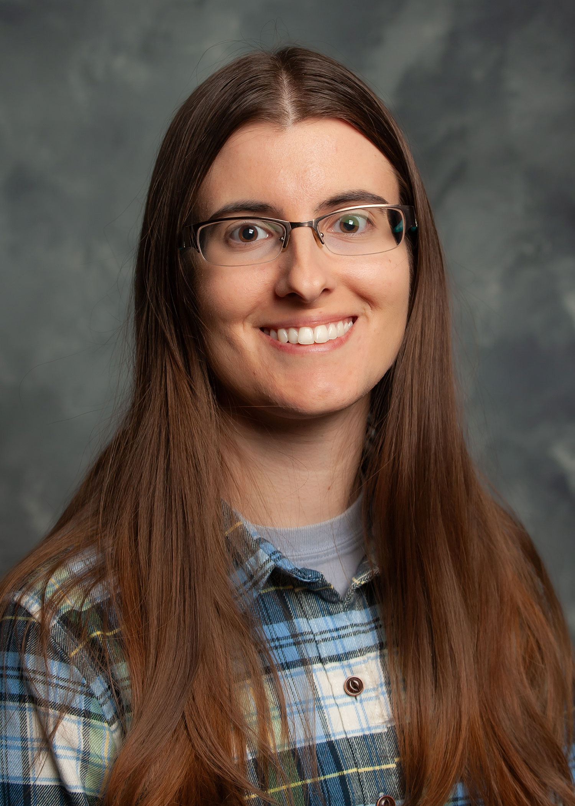

People
Principal Investigator

Li Zhang
Ph.D. in Nutrition, Mississippi State University, 2017
Ph.D. in Agriculture Biological Environmental & Energy Engineering, Jilin University, China, 2013
Dr. Zhang’s research focuses on agricultural microbiomes, microbial genomics, vaccine development, and food safety. His lab develops advanced molecular diagnostic tools (LAMP, qPCR) and applies whole-genome sequencing and bioinformatics to address critical challenges in poultry health and food safety.
Google Scholar | GitHub | MSU Profile
Email: l.zhang (at) msstate.edu
Research Faculty

Dr. Linan Jia
Assistant Research Professor
Ph.D. in Agricultural Science, Mississippi State University
M.S. in Animal Nutrition, Agricultural University of Hebei
B.S. in Animal Science, Hebei University
Dr. Jia specializes in poultry health and disease prevention, with a focus on understanding the molecular mechanisms underlying poultry pathogens and meat quality issues. She integrates advanced biotechnology and computational approaches to develop innovative solutions for the poultry industry. Her research aims to improve animal welfare and food safety through the development of new prevention and treatment strategies.
Email: lj912 (at) msstate.edu
Research Technician

Elianna Walters
Research Associate
[Education and research interests to be added]
Email: erw263 (at) msstate.edu
Postdoctoral Researchers

Dr. Xin Ye
Postdoctoral Research Associate
[Education and research interests to be added]
Email: xy108 (at) msstate.edu
Dr. Huanling Xing
Postdoctoral Research Associate
[Education and research interests to be added]
Email: [To be added]
Ph.D. Students

Sunita Shrestha
Candidate for Ph.D. in Poultry Science
Sunita is working on pathogen genomics and vaccine development strategies for poultry pathogens. Her research focuses on identifying and characterizing vaccine candidates against avian pathogens using reverse vaccinology approaches.
2025 Lallemand Animal Nutrition Scholarship Finalist
Email: ss4440 (at) msstate.edu

Manhong Wang
Candidate for Ph.D. in Poultry Science
Manhong is developing culturomics approaches to isolate and characterize beneficial bacteria from the poultry gut microbiome. His research aims to identify probiotics that can improve poultry health and reduce pathogen colonization.
2024 International Paper Scholarship ($1,500), Mississippi Poultry Association
Email: mw2224 (at) msstate.edu
M.S. Students

Rita Ugoh
Candidate for M.S. in Food Science
Rita is characterizing spoilage bacteria in catfish using culturomics approaches for the Mississippi Center for Food Safety. Her work aims to improve quality control and extend shelf life in catfish processing.
Email: ru90 (at) msstate.edu

Haley Nabors
Candidate for M.S. in Poultry Science
Haley is investigating antibiotic resistance and multi-drug resistance patterns in Clostridium perfringens isolated from diseased chickens. Her research contributes to understanding antimicrobial resistance in poultry pathogens.
Expected graduation: 2027
Email: hln80 (at) msstate.edu
Undergraduate Researchers
Zoe Lohf
Undergraduate Research Assistant
Zoe joined the lab in 2025 supporting laboratory operations and research projects.
Keaura Mearday
Undergraduate Research Assistant
Keaura joined the lab in 2025 supporting laboratory operations and research projects.
Former Lab Members
Former Postdocs
Dr. Monzur Chowdhury
Former Postdoctoral Research Associate
Research focus: Pathogens, host-pathogen interactions, molecular & cellular biology
Now: Researcher, Mississippi State University
Dr. Saman Fatemi
Former Postdoctoral Research Associate
Research focus: Poultry nutrition, in ovo injection, immunology, and genetics
Now: Postdoctoral Associate, Mississippi State University
Dr. Reshma Ramachandran
Former Postdoctoral Research Associate
Research focus: Poultry reproductive physiology, bacterial pathogen mitigation, host-pathogen interactions
Now: Professional Services Veterinarian - Poultry, IDEXX Laboratories
Dr. Nikhil Nuthalapati
Former Postdoctoral Research Associate
Research focus: Light source effects on broiler growth and health, Clostridium perfringens prevalence
Now: University of Alabama
Ph.D. Alumni
Dr. Diksha Pokhrel (Ph.D. 2024)
Thesis: Campylobacter jejuni biofilm formation, aerotolerance, and genomic characterization
2023 IFT Mid-South Section Scholarship ($2,000), PSA Travel Award ($1,500)
Now: Industry position
Dr. Hudson T. Thames (Ph.D. 2024)
Thesis: Salmonella biofilm formation and environmental stress responses
2023 PSA Travel Award ($1,500)
Now: Assistant Professor, Poultry Science, Mississippi State University
Dr. Sabin Poudel (Ph.D. 2023)
Thesis: Campylobacter jejuni vaccine candidate identification and characterization
2022 PSA Student of The Year ($1,000), 2023 MAFES Excellent Research Award ($2,000), CALS Student Research Ambassador, International Paper Scholarship 1st place ($5,000)
Now: Assistant Research Professor, Poultry Science, Auburn University
M.S. Alumni

Hailey Fugate (M.S. 2025)
Thesis: Vaccine candidate validation against avian pathogenic E. coli and Campylobacter jejuni colonization challenge models
2025 SCAD Travel Award ($250), IPPE Travel Award ($500)
Now: Industry position
Abubakar Shitu Isah (M.S. 2024)
Thesis: Bioluminescent Salmonella Reading construction and vertical transmission evaluation
Now: Ph.D. program at CVM, Mississippi State University
Priyanka Devkota (M.S. 2022)
Thesis: APEC virulence characterization and antimicrobial resistance
PSA Certificate of Excellence, International Paper Scholarship 1st place ($2,000)

Deepa Chaudhary (M.S. 2022)
Thesis: LAMP assay optimization for Clostridium perfringens detection
PSA Certificate of Excellence in Genetics and Molecular Biology
Now: Postdoc

Tianmin Li (M.S. 2020)
Thesis: In ovo probiotic effects on APEC incidence in broilers
International Paper Scholarship 2nd place ($2,000)
Now: PhD
Undergraduate Alumni
Sulav Jung Thapa (2024-2025)
B.S. in Computer Science
Research focus: Image recognition and processing using OpenMV modules for health and disease monitoring in poultry farms
2024 USDA ARS Undergraduate Summer Internship, 2024 ORED URCD Award (#342)

Mackenzie Ripper (2020–2022)
CALS/MAFES Undergraduate Research Scholars Program
Mackenzie conducts research in a poultry science laboratory. Featured in MAFES Discovers
Now: Veterinary School, NC State University (Fall 2024)
Mary Beth Tingle (2022–2023)
CALS/MAFES Undergraduate Research Scholars Program
1st place ($250), MSU 2023 Spring Undergraduate Research Symposium (Biological Sciences)
Javad A’arabi (2022)
Honors Thesis Student
Dylan Lesak (2021)
William M. White Special Project Award recipient
Now: Completed M.S. at MSU (2023)
Sadie White (2019)
CALS/MAFES Undergraduate Research Scholars Program
Interested in joining our team? See current opportunities